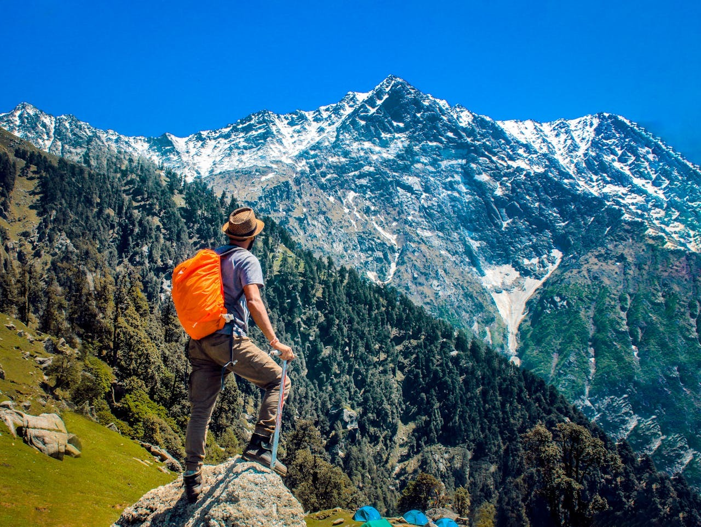

¿Qué tipo de entorno prefieres para tus vacaciones?
Playa
¿Sabias qué...
Las playas no siempre son doradas? Hay playas con arena negra volcánica, rosa coralina y hasta verde olivo. ¡Cada grano de arena cuenta una historia!

Montaña
¿Sabias qué...
Las montañas tienen su propio clima? Al subir una montaña, puedes experimentar diferentes climas en pocos kilómetros. ¡Es como viajar por el mundo sin salir de una misma montaña!

Ciudad
¿Sabias qué...
Muchas ciudades tienen secretos subterráneos?Bajo las calles de muchas ciudades se encuentran redes de túneles, ríos subterráneos y hasta antiguas ruinas. París, por ejemplo, tiene más de 200 kilómetros de túneles subterráneos.